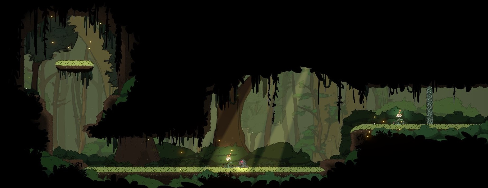
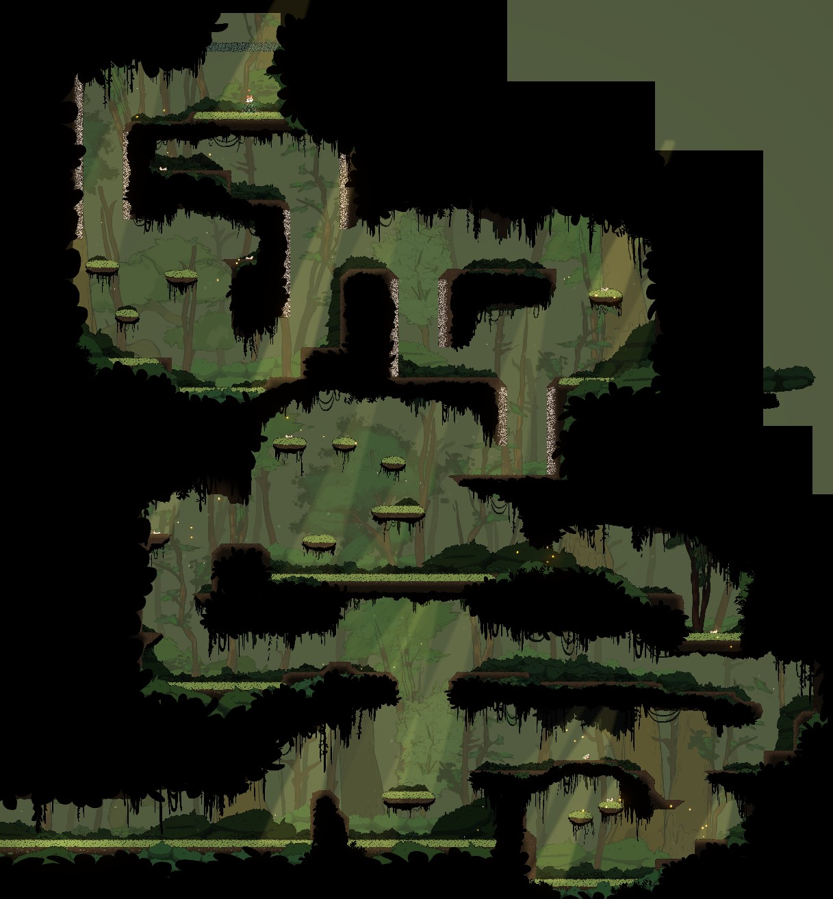
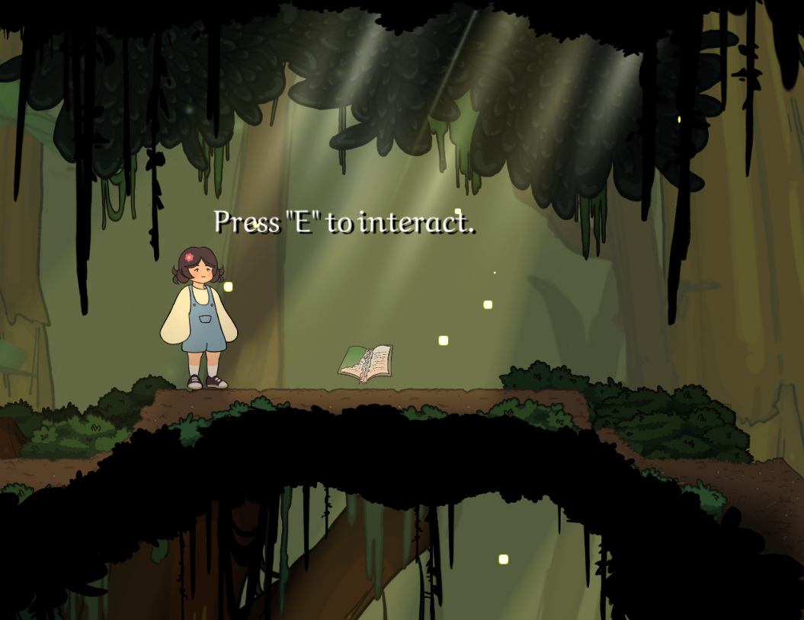

Initially conceptualized as a personal side project and further developed at RIT's MAGIC Maker Studio, Good Luck Valley combines traditional platformer mechanics with an enchanting, heartfelt story. Play as Anari, a young girl who now finds herself in a mystical Spirit World. Anari must use her newfound abilities to manipulate mushrooms to decompose a harmful, invasive species that plagues the forest, while simultaneously uncovering the secrets of her mother's connection to this mysterious world.
Our goal was to develop a minimum viable product to showcase the game's primary mushroom bounce mechanic as well as demo level layout, environment, and narrative. In order to achieve this goal, a 10 week production schedule was managed with both a static big picture schedule, and a living 2-week agile sprint schedule.
Key goals in the development of this project centered around creating an environment that feels lush and cohesive, implementing player movement that feels good to play, and contextually marrying the environment and the platformer mechanics with the narrative.

As lead level designer, I worked heavily with both the art and programming teams to develop the mushroom mechanics and how the player will interact with the world.
I began my process by creating flowcharts outlining player progression and key moments within each level, as well as the broader onboarding process and difficulty curve for the game.
I then developed greyboxes of the levels in our MVP to get a sense for scale, geometry of the space, and how the player will move within the environment. Interactables were strategically placed to onboard players and introduce them to the game's mechanics in a natural way.
Iterating further, I worked heavily with the environment artists to transition from temporary assets to permanent assets to craft a lush, aesthetic environment.

Additionally, I worked to create visual effects to enhance user interface and feedback, and bring more dynamic life to the environment. I created particle effects such as fireflies and soft dust to add movement to the scene and help guide players. I also enhanced player feedback with VFX such as dirt and grass particles on impact, bushes that rustle according to player movement, and simulated wind shaders in vines and other plantlife.